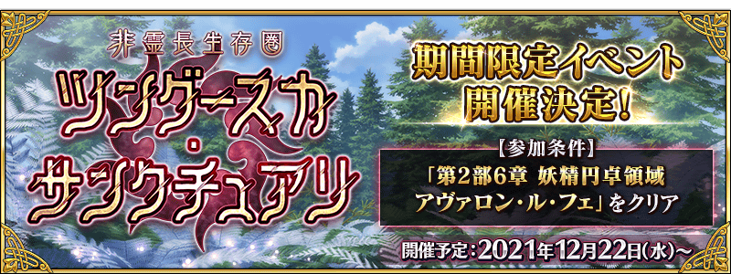
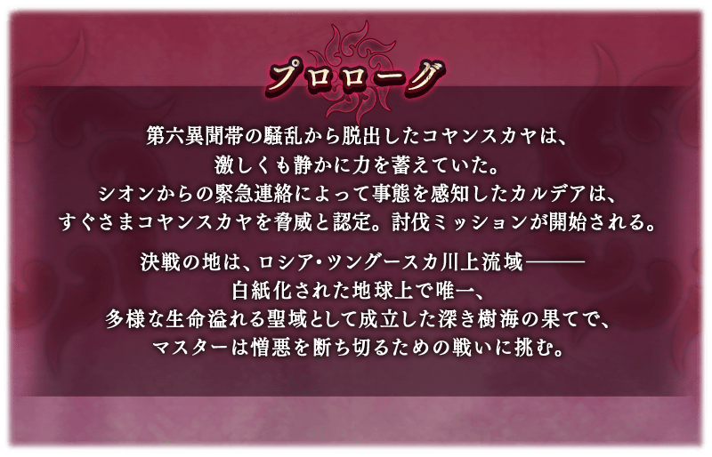
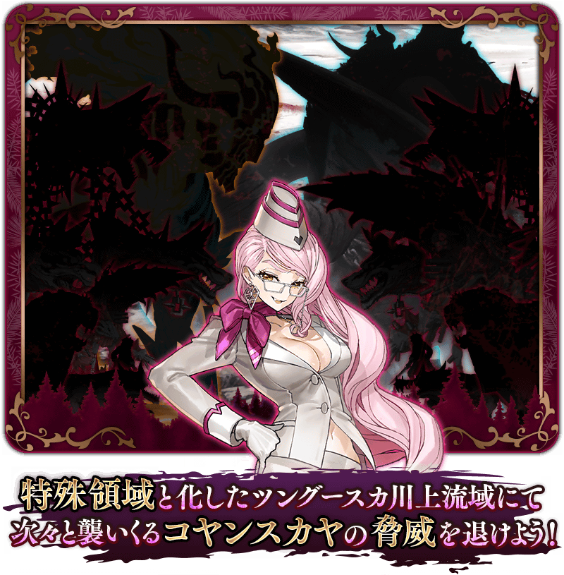
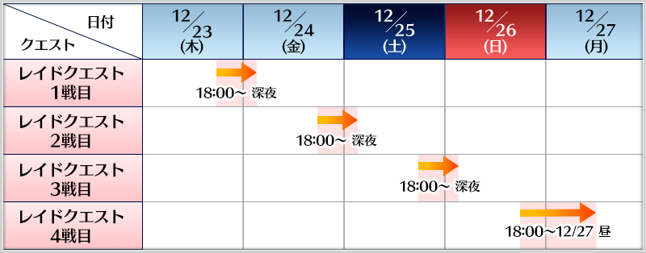
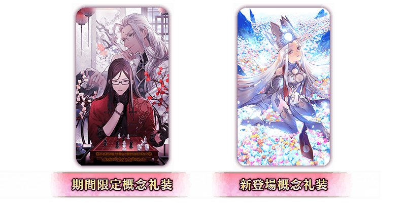
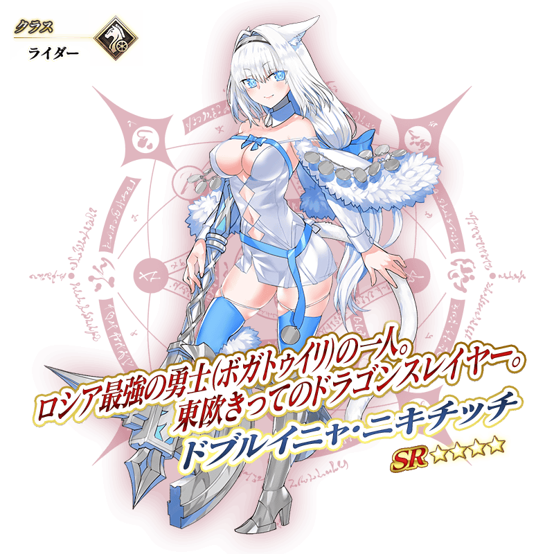

 ※12月18日(六) 17:00圖片更新


決定舉辦期間限定活動「非靈長生存圏 通古斯卡聖域」！
詳細敬請期待續報。
※本頁面皆為開發中圖片。會有與實際圖片相異的情況。
◆活動預定舉辦◆
2021年12月22日(三) 17:00(預定)～
※12月18日(六) 17:00更新
◆活動參加條件◆
滿足以下條件的御主才能參加
・通過第2部 第6章「Lostbelt No.6 妖精圓卓領域 阿瓦隆・勒菲 星辰誕生之刻」
※不需要通過亞種特異點(從Ⅰ到Ⅳ)。

在「Fate/Grand Order」官方網站內首頁及Gallery，公開了期間限定活動「非靈長生存圏 通古斯卡聖域」的活動告知影片。敬請確認。 ※自2021年12月1日(三)，在最初起動程式時會播放「非靈長生存圏 通古斯卡聖域」的活動告知影片。 ※「非靈長生存圏 通古斯卡聖域」的活動告知影片會登錄到個人空間(マイルーム)的圖鑑(マテリアル)，在經過一段期間後刪除。


【12月18日(六) 17:00追記】
在「FGO 迦勒底・衛星基地台 2021-2022」福岡會場，發表了在期間限定活動「非靈長生存圏 通古斯卡聖域」中其他御主合作作戰的襲擊關卡的舉辦時間。
舉辦時間如下述。
【襲擊關卡舉辦時間表】
| 關卡的種類 | 舉辦期間 |
|---|---|
| 襲擊關卡第1戰 | 2021年12月23日(四) 17:00～深夜結束預定 |
| 襲擊關卡第2戰 | 2021年12月24日(五) 17:00～深夜結束預定 |
| 襲擊關卡第3戰 | 2021年12月25日(六) 17:00～深夜結束預定 |
| 襲擊關卡第4戰 | 2021年12月26日(日) 17:00～12月27日(一) 昼結束預定 |

【12月18日(六) 17:00追記】
介紹在「FGO 迦勒底・衛星基地台 2021-2022」福岡會場先行公開的期間限定活動「非靈長生存圏 通古斯卡聖域」Web用告知廣告！
在「Fate/Grand Order」官方網站內首頁及Gallery，公開了期間限定活動「非靈長生存圏 通古斯卡聖域」的Web用告知廣告。敬請確認。
動畫製作：A-1 Pictures
【12月18日(六) 17:00追記】
「FGO 迦勒底・衛星基地台 2021-2022」福岡會場中，公開了新概念禮裝的插圖。
關於概念禮裝的詳情，敬請期待續報。

【12月18日(六) 17:00追記】
在「FGO 迦勒底・衛星基地台 2021-2022」福岡會場，發表了期間限定活動「非靈長生存圏 通古斯卡聖域」中在聖晶石召喚初登場的2位新從者！
關於從者的詳情，敬請期待續報。


【12月18日(六) 18:00追記】
其他還有，
・主線關卡通過聲援宣傳活動 第1彈
・主線關卡通過聲援宣傳活動 第2彈
・主線關卡通過聲援宣傳活動 第3彈
・主線關卡通過聲援宣傳活動 第4彈
以期間限定舉辦中！
關於詳情，請自下述橫幅確認。
■「主線關卡通過聲援宣傳活動 第1彈」詳細情報

■「主線關卡通過聲援宣傳活動 第2彈」詳細情報

■「主線關卡通過聲援宣傳活動 第3彈」詳細情報

■「主線關卡通過聲援宣傳活動 第4彈」詳細情報